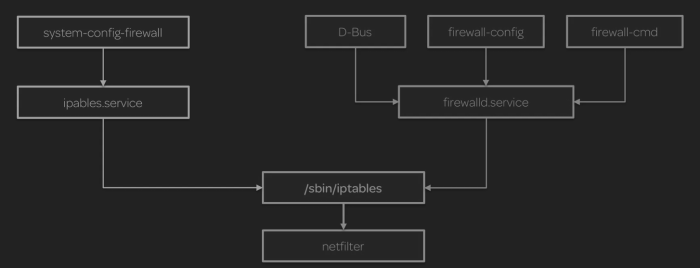
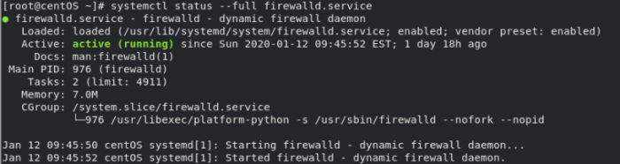

firewalld vs iptables
firewalld is the default dynamic firewall daemon in RHEL7 while
iptables service is the legacy firewall service for Linux.
both
firewalld.service and the
iptables.service talk to the netfilter framework in the kernel through the same iptables interface installed in
/sbin/iptables. However differently from iptables.service, firewalld.service can change the settings during normal system operation without that the connections are lost.
